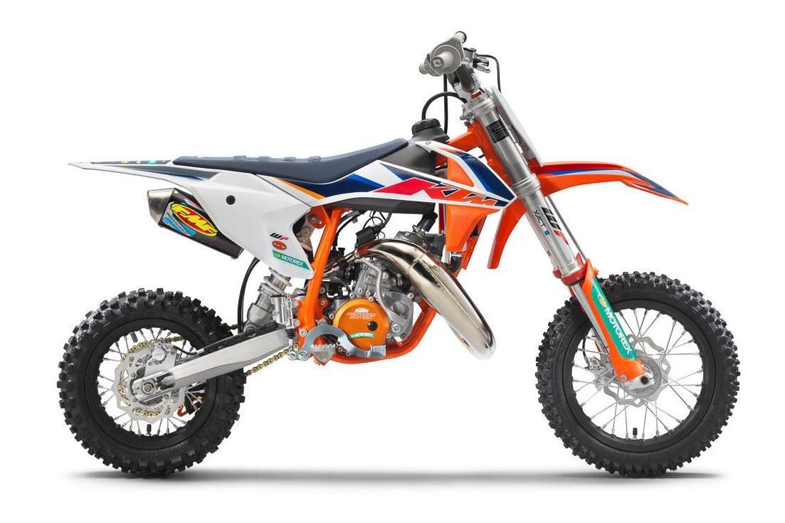

The KTM 50 SX is a true read to race motocross machine. It is a genuine dirt bike that, like its bigger siblings, is produced with top-quality components, real race-bred input, and thoughtful development. It goes without saying that the KTM 50 SX is the only choice when stepping into the world of MX.
